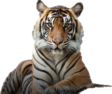

You can protect tiger simply by switching off the lights
Do you know that?
According to a recent study from WWF
The tiger population was estimated at about 100,000 at the beginning of the 20th century
but it declined rapidly over the past 100 years, dropping the number of wild tigers to 3,200 in 2010.
The reason to prevent this decline is that Tigers are the top predators in their food chain, which means they regulate the population and behavior of their prey and other animals.
Starting today, let's start with a small practice like turning off the lights!
Turn off the light and save the tiger!
